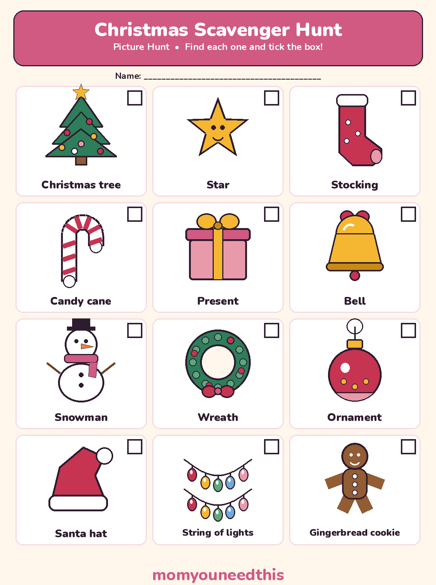
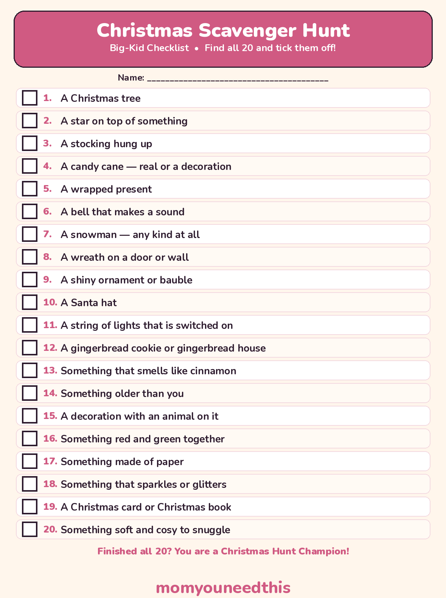

Christmas Scavenger Hunt Free Printable Picture Hunt & Big-Kid Checklist
A free Christmas scavenger hunt in two printable versions: a picture hunt with 12 Christmas things for little kids to find around the decorated house, and a 20-item checklist with challenge items for older kids — plus a Christmas lights walk version for the whole family. No signup.
Last updated: October 25, 2026
Quick Answer
Need a scavenger hunt xmas game that needs almost no prep? This free Christmas scavenger hunt comes in two printable versions: a 12-picture hunt for little kids who cannot read yet, and a 20-item checklist with challenge items for older kids. Print one, hand over a pencil, and start hunting — a lights-walk version is on the page too.
At a Glance
- Hunts: 2 printables + 1 lights walk version
- Picture hunt: 12 items, pictures + words
- Checklist hunt: 20 items, with challenge items
- Ages: 2+ with an adult (picture hunt), 5+ (checklist)
- You need: A printer, a pencil, a decorated home
- Cost: Free — print at home
🧒 The Picture Hunt for Little Kids
A Christmas scavenger hunt a 2-year-old can actually play: every item is a picture first, so nobody has to read a word to join in.
The picture sheet holds 12 things that are really there in a decorated home — a Christmas tree, a star, a stocking, a candy cane, a present, a bell, a snowman, a wreath, an ornament, a Santa hat, a string of lights and a gingerbread cookie. Your child carries the sheet from room to room, finds each one, points at the real thing, and ticks its box.
Toddlers hunt with an adult. Walk with your little one, read the word under each picture out loud, and let them do the finding and the ticking — that part is theirs. If an item lives up high (the star, the lights), a point and a shout count as found. One full sheet, twelve proud ticks, is a complete game for this age.

✂️ Download Your Free Picture Scavenger Hunt
12 Christmas pictures to find and tick — made for kids who cannot read yet.
⬇️ Download Free Picture Hunt 🖨️ Print🎁 Free printable for ages 2–5, with an adult
🔎 The Big-Kid Checklist Hunt
Twenty written items for readers — the same decorated house, a much harder hunt.
The checklist starts with the Christmas basics — tree, stocking, wreath, Santa hat — and then turns into a real challenge: something that smells like cinnamon, something older than you, a decoration with an animal on it, something red and green together, something that sparkles. Those items have no single right answer, which is exactly what makes older kids argue, negotiate and keep hunting.
Make it competitive: print a sheet each, set a timer for 20 minutes, and score 1 point per item plus 2 points for every challenge item (numbers 13 to 20). First to finish does not automatically win — most points wins, so the careful hunter beats the fast one.

✂️ Download Your Free Scavenger Hunt Checklist
20 items to find and tick, including 8 challenge items — one sheet per hunter.
⬇️ Download Free Checklist 🖨️ Print🎁 Free printable for ages 5+
💡 Christmas Scavenger Hunt Ideas for Indoors
Ran both sheets already? These christmas scavenger hunt ideas stretch the same game across the whole holiday — no new supplies needed.
🔁 Reverse hunt.
Kids hide 6 soft Christmas items (a Santa hat, a stocking, a plush snowman) and an adult has to find them against the clock. Being the hider is the prize.
📸 Photo finish.
Older kids prove each find with a photo instead of a tick. Funniest photo of the day wins a bonus point — no faces of sleeping relatives, that is the house rule.
🧩 Riddle round.
Skip the list: an adult reads clues instead — “I hang by the fire and hope for treats” (stocking). Right answers earn the tick. Best for ages 6+.
⏱️ Beat the song.
Play one Christmas song (about 3 minutes) and see how many items a hunter can tick before it ends. Short rounds, instant rematches.
🌟 The Christmas Lights Walk Hunt
Take the hunt outside: walk your neighbourhood after dark and spot these 10 things together. Read the list out loud, or copy it onto a card before you go.
1. A house covered in white lights
2. A house with coloured lights
3. A reindeer — real shape, any size
4. A Santa in a window or a garden
5. A wreath with a bow on a front door
6. A Christmas tree glowing in a window
7. Lights shaped like candy canes or stars
8. Twinkling lights that flash on and off
9. An inflatable decoration
10. The most decorated house on the street
Stay safe out there: it gets dark and cold fast in December. Every group walks with an adult, everyone stays on sidewalks, and roads are crossed together, with an adult, at corners. Dress for standing around — hats, gloves and warm socks — bring a flashlight for dark stretches, agree on the route and the turn-around point before you leave, and head home when fingers get cold, finished list or not.
🖨️ How to Run Your Hunt
- Print the right sheet. Picture hunt for little kids who cannot read yet, checklist for readers. One sheet per hunter, plus a pencil each.
- Set the boundaries first. Say which rooms are in the game and which are not — bedrooms and breakable shelves stay out unless you say otherwise. Found means seen and pointed at; nothing gets picked up or moved.
- Pair up the youngest hunters. Toddlers hunt with an adult or an older sibling: they carry the picture sheet, name each picture together, and the ticking is the toddler's job.
- Add the twist for older kids. Timer on, challenge items worth double, or riddle clues instead of the list — the checklist section above has the scoring that keeps it fair.
- Finish together. Count the ticks out loud, crown the Christmas Hunt Champion, and let the winner pick the hot chocolate toppings. A hunt that ends warm gets asked for again.
🎄 More Christmas Fun for Moms & Kids
😂 Christmas Jokes for Kids
Clean Christmas jokes to tell while the hunt sheets print. Read the jokes.
🧠 Christmas Trivia
Christmas trivia questions for the hunters who finished first. Play the trivia.
🔤 Christmas Word Search
A free printable Christmas word search for a quiet moment after the hunt. Get the word search.
🎨 Free Coloring Pages
Hundreds of free coloring sheets to print for every age. See the coloring pages.
❓ Christmas Scavenger Hunt FAQ
What age is this Christmas scavenger hunt for?
The picture hunt suits ages 2 to 5 — the items are pictures with word labels, so a child who cannot read yet can still play, hunting alongside an adult. The written checklist suits ages 5 and up, and its challenge items keep 8- to 10-year-olds busy too.
Is the Christmas scavenger hunt free to print?
Yes — both sheets are free to print at home, as many copies as your hunters need, with no signup. Print one per child so everyone ticks their own boxes.
How do you play a Christmas scavenger hunt with toddlers?
Use the picture sheet and hunt together: walk room to room with your toddler, read the word under each picture, and let them spot the real thing and tick its box. A point and a shout count for items up high, like the star and the lights.
Can I use these hunts at a class party or family gathering?
Yes — print a sheet per child and run it as a group game. For a party, the checklist with the timer and double points for challenge items keeps mixed ages playing together, and the picture sheet keeps the youngest guests in the game.
Is the Christmas lights walk safe for kids?
Yes, with the usual winter-evening care: an adult walks with every group, everyone stays on sidewalks and crosses roads together at corners, warm clothes and a flashlight come along, and you agree the route before you leave. The full safety notes are in the lights walk section above.